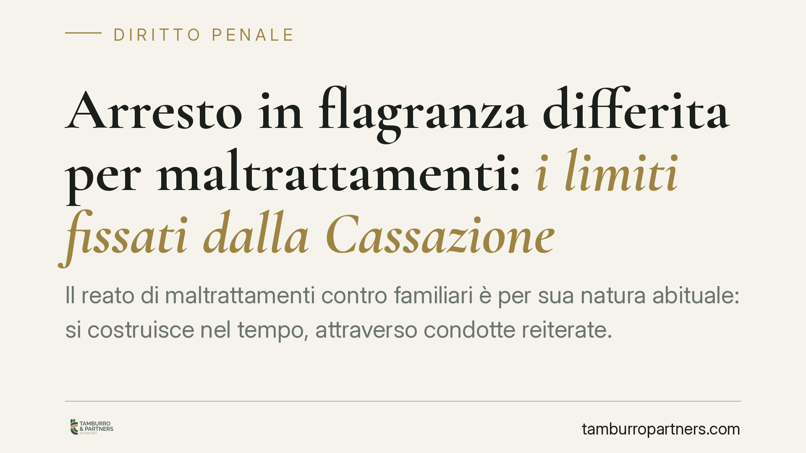

Arresto in flagranza differita per maltrattamenti: i limiti fissati dalla Cassazione
Il reato di maltrattamenti contro familiari è per sua natura abituale: si costruisce nel tempo, attraverso condotte reiterate. Da qui il nodo affrontato di recente dalla Corte di Cassazione: un singolo frammento video può giustificare l'arresto? La risposta, articolata, incide sull'operato della polizia giudiziaria e sull'equilibrio tra tutela della vittima e garanzie dell'indagato.

Il caso e la questione
La domanda è concreta: se la polizia giudiziaria dispone di una videoripresa che mostra un episodio violento in ambito domestico, quel materiale è sufficiente a procedere all'arresto anche quando l'autore non viene colto sul fatto?
La questione ruota attorno alla cosiddetta flagranza differita, un istituto che consente l'arresto anche a distanza di tempo dall'episodio, sulla base di documentazione (video o fotografica) da cui il fatto emerga in modo chiaro. Secondo un orientamento della Corte di Cassazione, un singolo frammento video non basterebbe a fondare l'arresto per maltrattamenti, proprio per la struttura del reato.
> Nota di verifica. Gli estremi della pronuncia (sent. n. 4834/2026) sono da confermare sulle banche dati ufficiali prima di considerarli definitivi. Il ragionamento giuridico qui esposto vale come orientamento e non come dato consolidato.
Inquadramento normativo
Il reato di maltrattamenti contro familiari o conviventi è previsto dall'art. 572 c.p. La sua caratteristica essenziale è l'abitualità: non punisce il singolo atto di violenza o di sopraffazione, ma una condotta che si ripete nel tempo e che, nel suo insieme, rende abitualmente dolorosa la convivenza. Il singolo episodio, isolato, può integrare altri reati (percosse, lesioni, minaccia), ma non i maltrattamenti.
Sul piano processuale, lo stato di flagranza è definito dall'art. 382 c.p.p.: è in flagranza chi viene colto nell'atto di commettere il reato, o chi, subito dopo, è inseguito o sorpreso con cose o tracce dalle quali appaia che abbia commesso il reato poco prima. Accanto a questa nozione, il legislatore ha introdotto forme di flagranza differita in ambiti specifici, tra cui quello della violenza domestica e di genere. La portata e i presupposti applicativi di tali disposizioni vanno letti con attenzione al testo vigente, che condiziona l'operatività dell'istituto alla presenza di documentazione da cui il fatto emerga in modo inequivoco.
Quanto ai presupposti dell'arresto, occorre distinguere. L'arresto è obbligatorio nei casi dell'art. 380 c.p.p. e facoltativo in quelli dell'art. 381 c.p.p., in funzione dei limiti di pena previsti per il reato e delle eventuali aggravanti. I maltrattamenti rientrano nell'arresto obbligatorio solo al ricorrere di determinate soglie edittali o aggravanti: non si tratta quindi di un automatismo generalizzato, ma di una valutazione ancorata al caso concreto.
Perché il singolo video non basta
Il punto logico è lineare. Se l'art. 572 c.p. punisce una condotta abituale, un frammento video documenta al più un episodio. Da solo, non prova la reiterazione né il quadro complessivo che qualifica il reato come maltrattamenti. Per fondare l'arresto in flagranza differita serve un materiale indiziario più ampio, che restituisca la dimensione continuativa delle condotte.
È bene chiarire un aspetto, per evitare fraintendimenti: questa impostazione non alleggerisce la gravità del reato né riduce la tutela delle vittime. Sposta il piano sul terreno probatorio, imponendo che la coercizione personale poggi su elementi solidi e non su un dato episodico.
Implicazioni pratiche
Per la polizia giudiziaria. La documentazione video va inserita in un contesto: precedenti segnalazioni, referti, testimonianze, denunce pregresse. Il singolo filmato è un tassello, non la prova esaustiva della condotta abituale.
Per le vittime. La costruzione di un quadro documentale nel tempo — annotazioni, referti medici, messaggi, testimonianze — assume un peso decisivo. Non è la ripresa isolata a fare la differenza, ma la ricostruzione dell'insieme.
Per l'indagato. La decisione riafferma una garanzia: la privazione della libertà personale non può basarsi su un elemento frammentario, sganciato dalla struttura del reato contestato.
Cosa fare in concreto
- Documentate nel tempo. Conservate referti, messaggi, foto e ogni traccia utile a ricostruire la reiterazione delle condotte, non solo il singolo episodio.
- Formalizzate le segnalazioni. Ogni denuncia o accesso in pronto soccorso contribuisce al quadro complessivo; datazioni e riscontri contano.
- Verificate la qualificazione del fatto. Distinguere tra reato episodico e maltrattamenti abituali orienta strategia difensiva e tutela.
- Valutate le misure di protezione. L'ordinamento prevede strumenti cautelari e di allontanamento indipendenti dall'arresto in flagranza.
- È opportuno rivolgersi a un legale per inquadrare correttamente la situazione prima di ogni passo processuale.
Disclaimer
Contributo informativo a cura di Tamburro & Partners - Avv. Giuseppe Tamburro. Non costituisce parere legale.
Ogni condominio ha una storia a sé.
Se gestisci un'amministrazione e vuoi un confronto su una specifica questione condominiale, scrivi allo studio. Ti rispondiamo entro un giorno lavorativo.